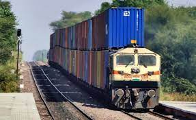
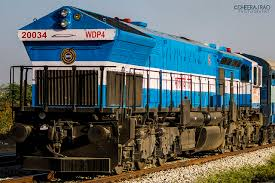
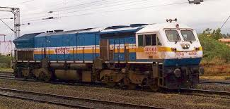
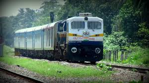

WDP Locomatives
WDP 4D

The Indian locomotive class WDP-4 (EMD GT46PAC) is a passenger-hauling diesel–electric locomotive with AC electric transmission designed by General Motors Electro-Motive Division and built by both GM-EMD and under license by Banaras Locomotive Works (BLW) of Varanasi, India for Indian Railways as the classes WDP4, WDP4B and WDP4D.[1] The GT46PAC is a passenger version of the previous Indian Railways EMD GT46MAC freight locomotive. The locomotive has a 16-cylinder 710G3B diesel engine and is one of the fastest diesel–electric locomotives in service in Indian Railways.[2]
Variants
WDP-4

The WDP-4 was the loco originally designed by GM EMD and 10 of them were dispatched to India by June 2001. Later on Banaras Locomotive Works, Varanasi started building them initially using knocked-down kits and later indigenously. Starting 2003, the locomotives were produced in large numbers by BLW. The locomotive features self diagnostics control using EM2000 onboard microprocessor which was a new technology for Indian Railways back then.
Unlike the Co-Co wheel arrangement featured on most locomotives, including its freight hauling variant, WDG-4, this loco has a Bo1-1Bo wheel arrangement meaning that it has two powered and one unpowered axle per bogie. This was done to reduce the weight of the loco to make it suitable for passenger operations and also to reduce maintenance.[3]
Visibility Issue
The use of the locomotive with the long hood forward configuration has been criticised with respect to the driver's visibility as it is affected due to the protruding radiator section at the hood-end. This criticism has been rejected by the Railways.[4] However, in response, the cab profile of some WDP-4s were widened with a Piggy-face profile, to increase the field of view from the control cab and the WDP-4B variant was also produced with the same widened cab profile.
WDP-4B

This was the first attempt of the Railways to improve upon the successful WDP-4 locomotive. The Bo1-1Bo was found inadequate for hauling 24 coach passenger trains due to the reduced tractive effort. As a result, DLW, reconfigured the chassis to be Co-Co instead. This led to better adhesion with the rails to provide better acceleration with heavy trains. Moreover, the original EMD 710 engine was tweaked to produce an output of 4,500 HP instead of the original 4,000 HP. this Up-rated engine was designated as EMD 16N-710G3B-EC, with an RPM of 910 at Notch-8. This locomotive came to be known as the "GT46PACe". One more important change added to this loco was the inclusion of Blended Brake System. This was added to maximise the use of Dynamic brakes by the loco-pilot and therefore minimise the wear and tear on the fixed brake rigging of the coaches and the locomotive. The addition of blended brake is responsible for the subclass to be designated with a 'B'. Some more features are the widened piggy-face cab profile to aid visibility, change in the Traction Motor blower by installing a higher power motor and increase in the axle load to 20.2 tonnes (19.9 long tons; 22.3 short tons). The locomotive also has a self-load test feature that allows it to test the net output of the engine. In Siemens and EMD systems, the loco has been provided with 2 traction inverters (TCC-1 and TCC-2, for the respective bogies) while in the Medha system, it has 6 traction inverters, one for each traction motor.[5]
WDP-4D

The final alterations to the GT46PAC came in the form of the WDP-4D. The locomotive is the most distinctively identifiable of the three thanks to the addition of a second cab at the long hood end of the locomotive. Due to the heat generated from the radiator at the second cab end of the locomotive, DLW had to install air conditioning to protect both the electrical components and the loco-pilot from the high temperatures.
The existing features from WDP-4B have been carried forward to this class and it exclusively features the widened cab profile. Since it is a Dual Cab now, it is called as "JT46PACe". The loco features a completely different desk control stand, provided by Medha with digital display screens allowing for remote fault diagnostics.
Many locos also have GSM-R based transmission antennae to transmit critical loco info for use by maintenance and signalling staff. It features electro-pneumatic microprocessor based control adapted from the WDP-4B and brake system equipment of KNORR/NYAB CCB type.
This loco again with Dual-Cab, but with More Power and Better Fuel Consumption and State-of-the-Art features compared to ALCo DL560C, along with an Air Conditioned Hood Cab, became a very efficient replacement of WDP-3A (ALCO DL560C) alias "Toaster".[6]
Builders
The first set of 10 locos starting from road number 20000 to 20009 were manufactured by the Electro Motive Diesel (EMD) of (General Motors) while road numbers 20011 upwards have been manufactured by Banaras Locomotive Works (DLW) of Varanasi in collaboration with GM (General motors). Siemens and Medha are part of this group providing a large number of components of the electronics on board this loco such as the control stand and traction inverters.[7] Additional components are acquired through tenders and a bidding process.